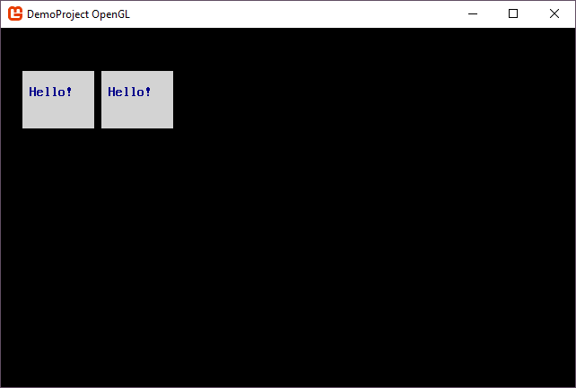
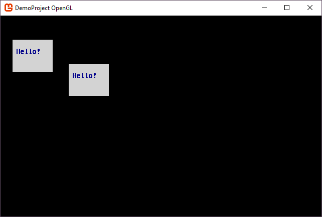

What is SadConsole.Global.CurrentScreen?
SadConsole uses the CurrentScreen property to determine what objects are going to be drawn and processed each frame. The current screen starts out as a ContainerConsole, which is a dead console that doesn't render anything. However, all Console types allows you to add other Console types as children. If you add a console to the @SadConsole.Global.CurrentScreen.Children collection, then when CurrentScreen is processed by the game engine, all children are also processed. So even though the CurrentScreen is a ContainerConsole and has nothing to render for itself, the children will still be rendered.
In general, a Console type handles the following:
- Positioning
- Visibility
- Game loop processing for Update and Draw.
- Parent-child relationship with other Console types.
Child objects you added to the current screen become processed by SadConsole each frame. For example, this code would add two small consoles to the CurrentScreen which would be rendered:
var console1 = new SadConsole.Console(10, 4);
console1.Fill(Color.DarkBlue, Color.LightGray, 0);
console1.Print(1, 1, "Hello!");
console1.Position = new Point(3, 3);
var console2 = new SadConsole.Console(10, 4);
console2.Fill(Color.DarkBlue, Color.LightGray, 0);
console2.Print(1, 1, "Hello!");
console2.Position = new Point(14, 3);
SadConsole.Global.CurrentScreen.Children.Add(console1);
SadConsole.Global.CurrentScreen.Children.Add(console2);

At this point, the object hierarchy in current screen looks like the following:
Global.CurrentScreen
│
├───console1
└───console2
If we were to parent console2 to console1, you would only have to add console1 to CurrentScreen because when console1 gets processed, it processes its children.
console1.Children.Add(console2);
Global.CurrentScreen.Children.Add(console1);
Global.CurrentScreen
│
└───console1
│
└───console2
If you compare this screenshot with the previous, you'll notice that console2 is positioned in a slightly different place than before. That is because the position of where something is drawn is based on its parents position. Here are the position settings with both consoles added directly to the current screen:

Global.CurrentScreen [Pos: (0,0) Drawn: (0,0)]
│
├───console1 [Pos: (3,3) Drawn: (3,3)]
└───console2 [Pos: (14,4) Drawn: (14,4)]
Since CurrentScreen is positioned at (0,0) and it's the root console (it has no parent), it's drawn at its position. Any child consoles would be positioned relative to (0,0), and therefore, drawn where they were positioned. If, as in the second code example above, we changed the parent of console2 from CurrentScreen to console1, this would draw console2 at a different place:
Global.CurrentScreen [Pos: (0,0) Drawn: (0,0)]
│
└───console1 [Pos: (3,3) Drawn: (3,3)]
│
└───console2 [Pos: (14,3) Drawn: (17,6)]
What happened is that console2 inherited the drawing position of its parent, console1 (3,3), and was offset by that amount. The position of console2 is still set to (14,4) the final drawing position was calculated by object_Position (14,3) + parent_Render_Position (3,3) = object_Render_Position (17,6).
As SadConsole processes an object, if it finds that IsVisible value is set to false, it immediately stops processing that object (for drawing) and does not inspect the Children of that object. So, if you were to hide console1 with console1.IsVisible = false then console2 would not be drawn.